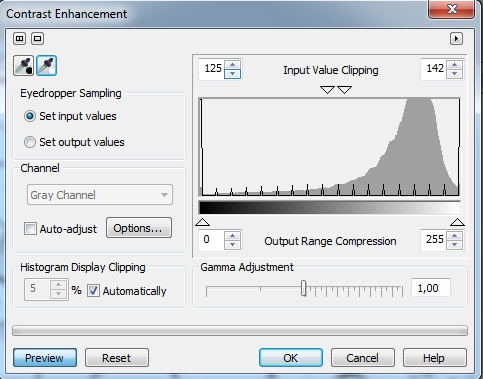

Создание текстуры
Вы много времени тратите на очистку изображений, удаление пыли и устранение царапин? Однако иногда, наоборот, необходимо добавить к изображению дефекты или придать ему устаревший вид. В этом уроке рассмотрим один из методов добавления таких дефектов. Наверняка, пользователи Photoshop сталкивались с описанием данного приема. Однако в Photo-Paint для получения такого же результата необходимо проделать несколько иные действия, хотя суть данного приема остается та же.
Назначение данного урока именно в рассмотрении действий и их последовательности для получения эффекта, а также какие инструменты используются для достижения результата. Для того, чтобы показать, как это реализуется в Photo-Paint, я решил создать что-то наподобие треснувшего стекла часов.
Исходные изображения показаны на рисунках 1 и 2.
Как вы догадались, рис. 2 будет использоваться в качестве текстуры. Забегая наперед скажу, что для получения действительно хорошего эффекта, требуется очень тщательный подбор текстуры, я же взял более или менее подходящую из имевшихся у меня в наличии.
Итак, сначала займемся подготовкой текстуры. Для ее подготовки необходимо исследовать каналы и выбрать из них наиболее контрастный. Это можно сделать двумя способами, но т. к. мы в конечном итоге будем использовать только один из них, то имеет смысл сразу разбить изображение на составляющие его каналы. Для этого выполните команду Image > Split Channels to > RGB (Изображение > Разбить каналы на > RGB). Photo-Paint разобьет изображение на каналы, создав для каждого канала отдельный файл в градациях серого в формате .cpt и присвоив ему название канала (рис. 3).
Проанализировав каналы, становится очевидным, что самым контрастным является красный канал. Теперь можно закрыть, без сохранения, исходный файл с текстурой, и файлы зеленого и голубого каналов.
Теперь наша задача, увеличить контрастность в файле Red-1.cpt. Это можно также сделать двумя способами, с помощью фильтра Contrast Enhancement (Увеличение контрастности) или Tone Curve (Цветовая кривая). Мы воспользуемся фильтром Contrast Enhancement (Увеличение контрастности). Выполните команду Adjust > Contrast Enhancement (Настройка > Увеличение контрастности). В диалоговом окне Contrast Enhancement (Увеличение контрастности), установите параметры, как на рис. 4 или с помощью пипеток установите значения черного и белого цвета.

В результате, у вас в изображении красного канала практически исчезнут оттенки серого (рис. 5)
Теперь вернемся к исходному изображению с часами (рис. 1). Нам нужно «заменить» фон (он же исходное изображение) на объект. Для этого выполните команду Object > Create > From Background (Объект > Создать > Из фона). Следующим нашим шагом будет создание маски циферблата часов. Создайте маску с помощью инструмента Ellipse Mask (Эллиптическая маска) и сохраните маску на диск, выполнив команду Mask > Save > Save Mask To Disk (Маска > Сохранить > Сохранить на диск).
Перейдите к изображению с текстурой и выполните команду Mask > Load > Load From Disk (Маска > Загрузить > Загрузить с диска). Выберите файл с сохраненной маской. Указатель мыши примет вид сохраненной маски. Щелкните на изображении текстуры. Photo-Paint автоматически создаст маску эллиптической формы. Однако место, где Photo-Paint создаст маску может нас не устроить, т. к. нам нужно разместить ее там, где сетка трещин наиболее плотная. Переместите маску в нужное место с помощью инструмента Mask Transform (Преобразование маски) (горячая клавиша М) (см. рис. 6).
Скопируйте выделение в Буфер обмена. Перейдите на исходный файл с часами и вставьте из Буфера обмена выделенный фрагмент. Тут Photo-Paint, к сожалению, может вас неприятно удивить тем, что размер вставленного фрагмента не совпадает с размером циферблата, как этого следовало ожидать. Измените размер вставленного фрагмента и разместите его над циферблатом. Объект созданный из фона вырежьте (Edit > Cut (Правка > Вырезать)), у вас останется только фрагмент текстуры.
Теперь создадим маску из этого фрагмента. Выполните команду Mask > Color Mask (Маска > Цветовая маска). В верхней части диалогового окна Color Mask (Цветовая маска), в раскрывающемся списке, выберите пункт Shadows (Тени) (рис. 7).
Вставьте из Буфера обмена вырезанный ранее объект. Теперь ваше изображение должно выглядеть, как на рис. 8.
Для создания текстуры в виде сетки трещин на стекле часов, добавим линзу. В нижней части докера Objects (Объекты) щелкните кнопку New Lens (Создание линзы). В появившемся диалоговом окне New Lens (Создание линзы) выберите линзу Tone Curve (Цветовая кривая) и щелкните ОК. В окне Tone Curve (Цветовая кривая) измените форму кривой (рис. 9).
В раскрывающемся списке Merge mode (Режим слияния) докера Objects (Объекты) выберите режим Devide (рис. 10).
На этом шаге я закончу урок. Однако вы можете продолжить эксперименты с режимами наложения. Для придания большей реалистичности можно дополнительно изменить прозрачность, что приведет к некоторому уменьшению царапин и выглядеть результат будет лучше. Дополнительно можно применить фильтр Emboss (Рельеф), что придаст царапинам подобие трещин на стекле. Ну и как я говорил, результат во многом зависит от удачного выбора текстуры. Окончательный вид изображения показан на рис. 11.
Для примера, на рис. 12 приведен результат применения режима наложения Invert с значением Opacity (Непрозрачность) = 80 и последующим применением фильтра Emboss (Рельеф).


Спасибо за урок!